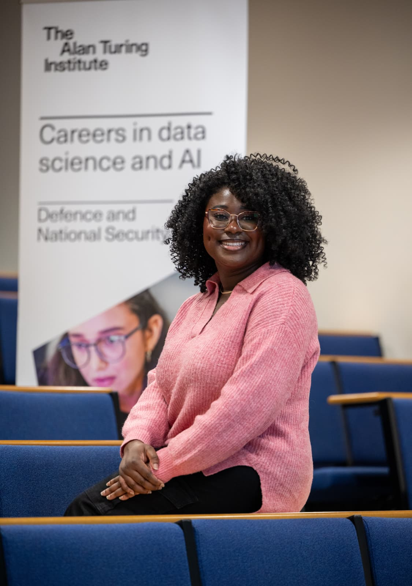
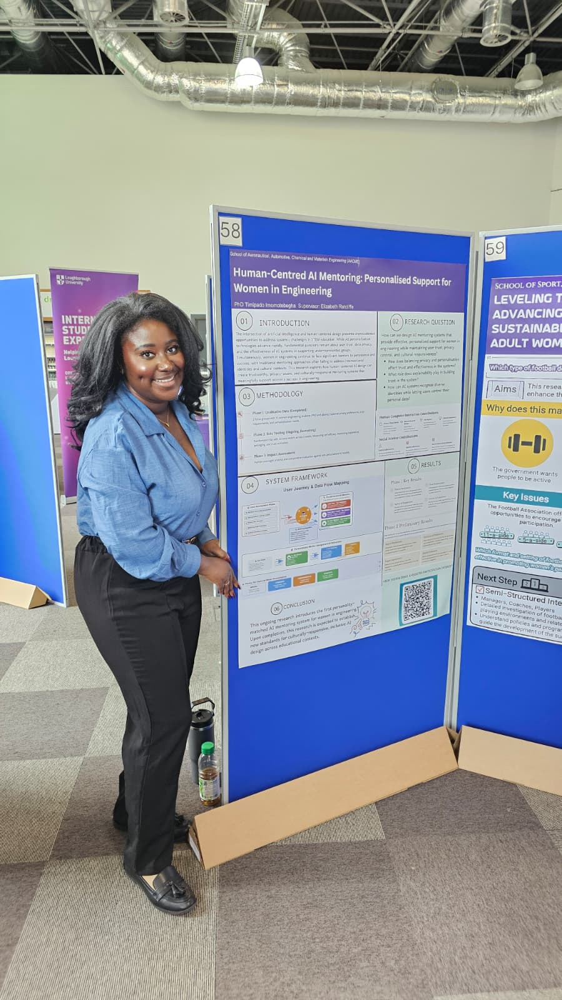
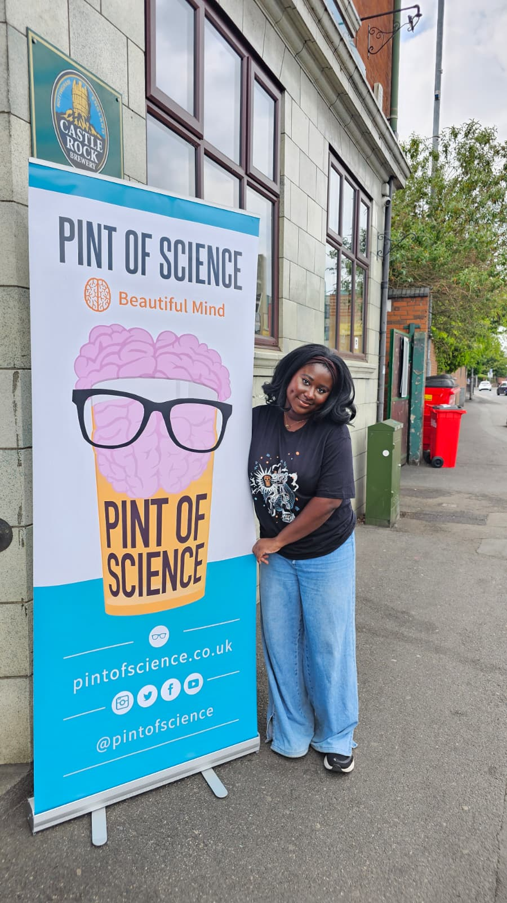

Loughborough University, Inclusive Engineering Excellence Hub. Supervised by Dr Elizabeth Ratcliffe. Data Science Facilitator at the Alan Turing Institute. Research focuses on multi-session adversarial evaluation of relationship-forming AI systems.
Inclusive Engineering Excellence Hub, supervised by Dr Elizabeth Ratcliffe. Research on adversarial safety evaluation for relationship-forming AI.
Embedded within the Data Science and Defence widening participation programme. Delivering technical sessions across UK universities alongside defence partners.
Building SyntheticWatch, a continuous behavioural monitoring platform for deployed AI systems.
Designed and delivered computer science curriculum.
Corporate communications, people operations, data product management.
The H Programme is an empirical research programme investigating how AI companions can be attacked and manipulated across sustained multi-session interactions. The infrastructure includes an AWS-hosted mentorship platform using Claude as the mentor model, Amazon Titan embeddings for persistent memory, three culturally grounded AI mentor personas with full 24-facet HEXACO personality profiles, and a five-model judge panel drawn from four model families.
Technical sessions across Middlesex, Nottingham, UCL, Keele, York, Aberystwyth, Aston, Salford, Hull, and Bradford. Covering AI safety, cryptography, NLP, and computer vision.
Organised and hosted AAAI-sponsored AI community events at Loughborough University.
Extended abstract presentation on Behavioural Privacy Nihilism and Identity Laundering.



SyntheticWatch is a continuous behavioural monitoring platform for deployed AI systems, currently being developed through Conception X Cohort 9 and mentored by Sarah Anto. The platform is designed to detect dormancy attacks, persona drift, and adversarial compromise across sustained multi-session interactions.
Loughborough University. Fully funded PhD within a five-PhD research cluster.
Loughborough University x Princess Nourah bint Abdulrahman University. First place with "MamaBand," a smart postpartum recovery wearable.
Association for the Advancement of Artificial Intelligence.
Loughborough University. Excellence in research communication.
Maia Network. Consecutive winner.